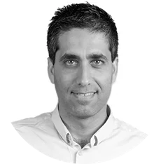
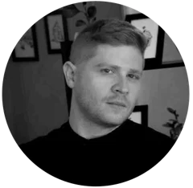
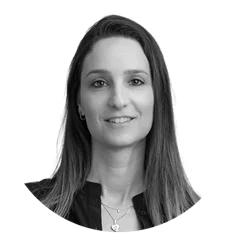
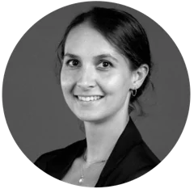
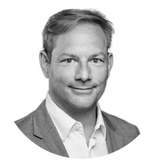
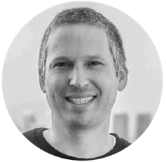

What they say.
Founders, CEOs and marketing leaders I've built brands and products with, in their own words.
Matan is by far the most talented full-stack designer that I've ever had the pleasure to work with. He is skilled in every aspect, quick and detailed. We've built some truly incredible brands together and I am so thankful for his professionalism. Matan is an absolutely pleasure to work and truly one of a kind.
Matan is a pleasant, efficient, and talented designer and UX developer. At Voca AI, we worked with Matan on various projects - starting from the website, through conferences graphics and also product UX and design. Matan was, and still is, our go-to choice for UX and design. I highly recommend Matan - he is a real pro!

Einav ItamarCEO · Voca.ai (Acquired by Snap)Matan consistently pushed us with his exceptional design skills and attention to details. His ability to transform concepts into visually stunning creations is nothing but short of remarkable.
We worked with Matan at Blings.io's initial stage. Matan helped us with design, motion graphics and videos, both for us and for our clients. Everything Matan touched looked great, and it resulted in new clients and finally with an investment. Matan will be a great asset for any startup.

Yonatan SchrieberCEO & Co-Founder · Blings.ioMatan is a brilliant creative individual. He executes his vision in an exceptional manner and the results are shown! I love working with him and I highly recommend Matan to anybody who needs branding and creative ideas.

Lee ShafrirVP Marketing & Biz Dev · Brooks-KeretMatan was our lead graphic designer for the class of 2019 at Techstars. He supported the companies not only with his creative input, but also helped sharpen their story and define their narrative. Even in times of immense pressure he kept a calm and positive perspective of things and got every job done often even earlier than expected. If you need any kind of creative support, Matan is your go to guy.

Franka GodinaProgram Manager · Techstars Tel AvivMatan did an amazing job designing to 20 different companies in such a short periods of time without compromising on quality and professionalism. It was a pleasure working with him on both a personal and professional level.
Matan was always very switched on, a good listener, who is resourceful to deliver UI/UX and product designs with short turnaround. He implements great ideas, whether they origin from himself or others, making him a true team player.

Jens SchindlerDirector · DACHMatan is super efficient, fun and easy to work with. He is also really good under pressure with tight schedules. I highly recommend working with him!

Yaakov GoldenhershCEO · List Funding